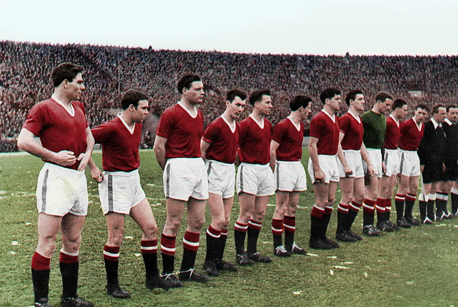

History of Manchester United
Manchester United has one of the richest histories in football. From its early beginnings as Newton Heath to becoming one of the most famous clubs in the world, the team has built a legacy full of change, success, and unforgettable moments.

The Beginning
Manchester United was founded in 1878 under the name Newton Heath LYR Football Club. The team was created by workers from the Lancashire and Yorkshire Railway depot. In its early years, the club played local matches and slowly began to grow in popularity.
A New Name
In 1902, the club faced serious financial problems and nearly disappeared. After new investment and new leadership, the club was saved and renamed Manchester United. This marked the beginning of a new chapter and helped shape the club’s future identity.
Old Trafford
Manchester United has played at Old Trafford since 1910. The stadium is one of the most famous football grounds in the world and is often called the "Theatre of Dreams." It has become an important symbol of the club’s history and global reputation.
Club Identity
Throughout its history, Manchester United has been known for attacking football, exciting young players, and success in both English and European competitions. The club’s style, tradition, and worldwide fanbase have made it one of the most recognized teams in sport.